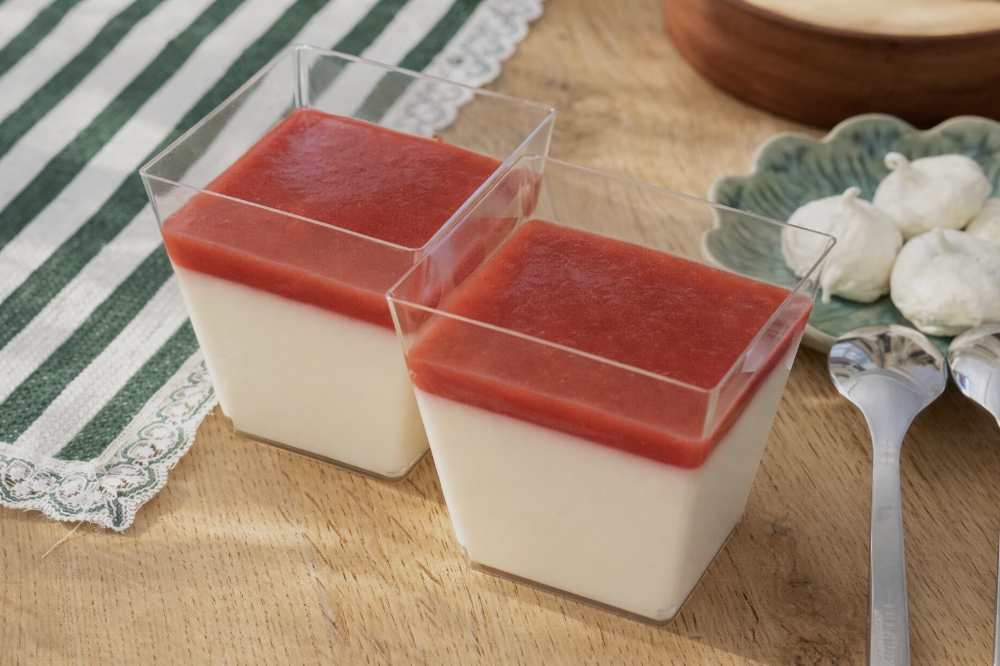

Вернуться к рецептам

Ингредиенты
- Для панна-котты:
- 300 г 20% сливок
- 100 г молока
- 50 г сахара
- 50 г воды
- 10 г желатина
- Для джема:
- 250 г замороженной клубники
- 30 г сахарной пудры
- 5 г крахмала
Способ приготовления
- Замочите желатин в холодной воде.Замочите желатин в холодной воде.
- В кастрюле смешайте сливки, молоко, сахар и ванильный сахар и доведите до 70°С. Снимите кастрюлю с плиты.
- Добавьте размягченный желатин в горячую смесь и перемешайте до полного растворения.
- Разлейте кремовую смесь по порционным формочкам. Удобно сначала взвесить смесь и разделить ее на количество порций, исходя из размера используемой посуды.
- Дайте ей немного остыть при комнатной температуре, затем поставьте в холодильник на 2 часа.
- Добавьте размягченное сливочное масло в горячий заварной крем и перемешивайте, пока оно полностью не растает.
- Затем измельчите клубнику, процедите ее через сито в кастрюлю и добавьте сахарную пудру.
- Взвесьте клубничную массу, разделите ее на равные порции и вылейте поверх слоя крема.
- Поставьте в холодильник еще на 2 часа до полного застывания.